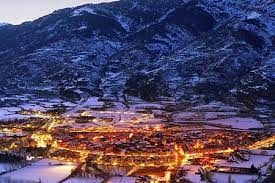
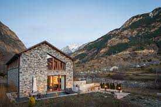
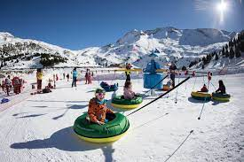

Javalambre
-  Informacion
-  Alojaiento
-  Actividades
Informacion
Si quieres entrar en contacto por primera vez con el deporte blanco, la estación turolense Aramón Javalambre es una excelente opción.
Sector Javalambre
Tanto si partes de cero como si tu objetivo es mejorar tu técnica, Aramón Javalambre ofrece clases de esquí personalizadas impartidas por profesionales de la nieve.
Javalambre apuesta, además, por el freestyle con el snowpark y una completa agenda de eventos relacionados con esta disciplina.
Alojamiento
-
Hotel civera
- Parking
- Guardaesquís
- Wifi gratuita
- Permite Mascotas
-
Hotel Teruel Plaza
- Ascensor
- Spa
- Televisor
- Restaurante
-
Hotel Oriente de Teruel
- Piscina exterior
- Wifi gratuita
- Spa
- Admite Mascotas
-
Hotel la Trufa Negra
- Restaurante
- Parking
- Spa
- Televisor
-
Hotel Mora
- Parking
- Guardaesquís
- Admite Mascotas
- Ascensor
Acitividades
- Duby Pista
-
Para los niños más pequeños que podrán realizar bajadas y disfrutar de un remonte exclusivo para ellos.
- Skicross
-
Un área donde se ponen a prueba las habilidades de los esquiadores con cinco peraltes, dos zonas de dubies y saltos. Solo apta para los amantes de la velocidad y las emociones fuertes.
- Pista de hielo
-
Una pista de hielo natural y al aire libre, diseñada para que los usuarios puedan vivir la experiencia de patinar sobre hielo a más de 2.000 metros de altura. Está situada junto al aparcamiento y a una nueva zona de restauración.
- Free Style Zone
-
Ubicada en el sector Lapiaz, cuenta con dos áreas, una para iniciados y otra para los expertos. Se accede a través del telesilla Camarena.